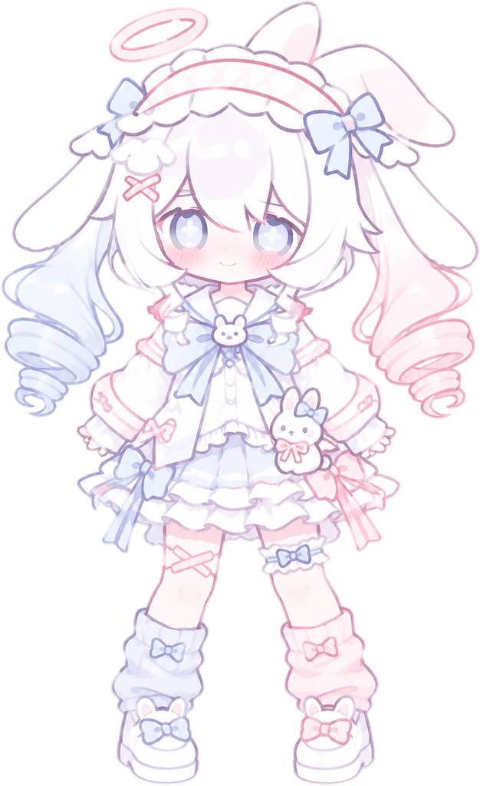

A LITTLE COMPANY
蓝小妹在这里
打个招呼，听听声音。把喜欢的片段收进自己的列表。

游戏模式与显示
保留立绘，鼠标点击穿透；暂停拖动、点按、动作、语音和表情互动。再次按快捷键或通过托盘、此面板关闭。
独立隐藏或显示桌宠，不改变游戏模式。隐藏时停止当前语音并暂停桌面互动。两个开关均立即生效，重启后恢复普通显示。
来互动一下
点击角色打招呼，按住可以拖动位置。
角色表情
语音收藏
点按互动 · 一次一条勾选录音加入互动列表，修改立即保存。顺序按列表编号循环；单曲循环重复列表第一条。每次互动只播一条，不会自动连续播放。直接点击录音可单独试听。
全部录音 点击折叠素材库
正在读取…
表情包
勾选图片加入互动列表，修改立即保存。顺序按列表编号循环；单张循环重复列表第一张。点击缩略图仍可单独发送。
全部表情包 点击折叠素材库
正在读取…
音乐播放器
本地歌曲 · 连续播放0:000:00
播放时进入歌姬模式：点按角色只可冒表情包，不打断歌曲。鼠标移到桌宠可见歌曲控制；手动点播语音会替换歌曲，游戏模式、隐藏及休息时停止播放。
歌曲列表
支持 MP3、WAV、OGG，每首不超过 500 MiB。添加后自动进入歌曲列表，不加入默认点按语音。
全部歌曲 勾选加入播放列表
桌宠模式
基础版随时切换模式。退回基础版会停用聊天，但保留模型设置、聊天记录和记忆。
陪伴版只用文字回复。仅当你明确要求时，才会播放匹配到的本地歌曲/语音或发送表情包。聊天记录和记忆保存在本机。 发送聊天时，当前对话片段和已保存记忆会提交给你配置的模型服务商；服务商可能按其政策留存请求或计费。API 密钥使用系统加密存储。DeepSeek API 接入教程（从创建 Key 到聊天测试）
- 打开 DeepSeek 开放平台并登录。。这是 API 开放平台；普通 DeepSeek 网页聊天会员与 API 余额是两套服务。
- 创建标准 API Key。在平台的 API Keys 页面点“创建 API key”，填写便于辨认的名称并确认。创建完成后立即复制并妥善保管；离开页面后通常不能再次查看明文。不要发到聊天、截图或公开仓库。
- 确认 API 余额与价格。API 调用按模型和 Token 用量计费，余额不足时需要在平台处理。。先用 Flash 模型少量测试，并留意平台用量。
- 在这里填入连接信息。运行模式选“陪伴版”；API 地址填
https://api.deepseek.com，模型 ID 填deepseek-flash，API 密钥粘贴刚创建的标准 Key，然后点“保存模式与模型”。桌宠会用 Windows 系统加密保存 Key。 - 先测普通聊天，再测互动指令。点“打开文字聊天”，发送“你好”。确认有文字回复后，再试“播放雨爱”或“随机发一个表情包”；相应歌曲/素材需先存在本地。调用失败时检查模型 ID、余额和 API Key，也可查看下方官方文档。
关于 Harness 管理的连接：“App-managed / 由 Harness 管理”表示连接凭据由 Harness 保存，通常不是可复制的标准 API Key，不能填进上面的 API 密钥框。当前陪伴版使用标准 API Key 直接连接模型服务。将来若接入 DSH，会通过 DSH 支持的接口使用它管理的连接；能否复用现有登录状态，要完成适配后实测，目前不能保证，也不需要导出 Harness 的内部凭据。
版本与更新
正在读取版本…
可切换基础版与陪伴版，也可安装目标类别的较新版本或较旧版本。更新前会校验安装包；切换类别或版本不会删除本地设置、API 密钥、聊天记录、记忆、语音、表情包和歌曲。检查更新仅在你点击时联网。